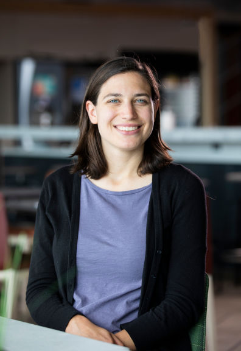

I am a Postdoc at Harvard University’s NSF-Simons Center for Mathematical and Statistical Analysis of Biology and a member of the Eddy Lab.
I received my Ph.D. from the multidisciplinary Algorithms, Combinatorics, and Optimization (ACO) program at Georgia Tech, where I was fortunate to be advised by Santosh Vempala.
My Ph.D. research focused on analyzing stochastic processes and modeling sparse graphs. I am now applying my background in probability theory and algorithms to computational challenges in biology. Broadly, I work on developing computational tools for inferring evolutionary relationships and mechanics.
16 Divinity Avenue
Cambridge, MA